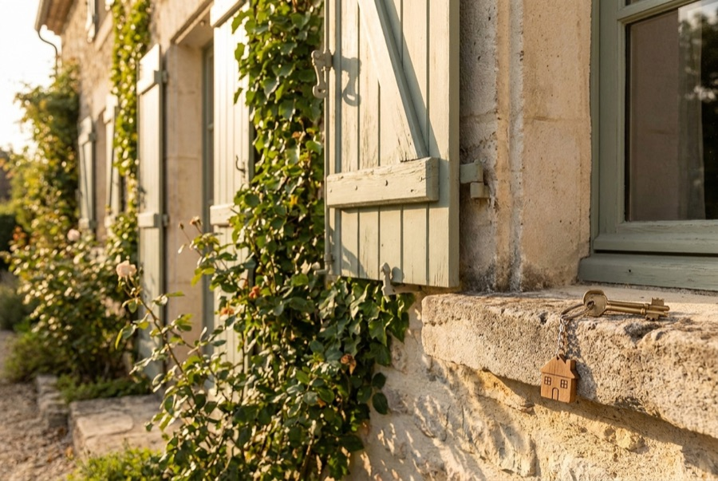

Gestion de patrimoine · Investissement durable · Cabinet indépendant
Un patrimoine se cultive.
Le vôtre peut pousser
durablement.
Cabinet indépendant pour particuliers, indépendants et chefs d'entreprise. Une conviction : performance et investissement responsable ne s'opposent pas.
Vos projets
Tout commence par un projet,
pas par un produit
Vous voulez investir dans du concret, du durable, utile à l'environnement ? Choisissez le pôle qui vous ressemble : vous y trouverez nos réponses, nos leviers et les solutions liées.
Réduction d'impôt
« Mon avis d'imposition pique de plus en plus chaque année. » Payer moins, intelligemment : je fais le tri, je chiffre, vous décidez.

Immobilier
Devenir propriétaire, investir dans la pierre, construire des revenus qui tombent chaque mois. Avec nos chasseurs de biens, à Paris et partout en France.
Explorer ce pôleRetraite & Famille
Préparer une retraite confortable dès maintenant, protéger les vôtres et transmettre sereinement.
Explorer ce pôleEntrepreneur
« Tout passe dans la boîte. Et moi ? » Transformer votre activité en patrimoine personnel, par un indépendant qui connaît vos contraintes.
Explorer ce pôleLe cabinet
De l'ingénierie du vivant
à la finance durable

Derrière B.organic, il y a d'abord un parcours.
Ingénieur de formation en environnement, agronomie et agroalimentaire, j'ai passé des années à travailler sur ce qui pousse, ce qui dure et ce qui nourrit. Puis un constat s'est imposé : l'endroit où l'on peut avoir le plus d'impact sur la transition, c'est là où va l'argent.
J'ai donc choisi de mettre cette double culture, scientifique et financière, au service de mes clients. Conseiller en gestion de patrimoine certifié AMF, j'étudie chaque solution sous ses deux angles : la solidité financière d'abord, la réalité de l'engagement durable ensuite, au-delà des étiquettes et des promesses.
Concrètement, je vous guide au maximum vers des solutions durables (fonds labellisés, SCPI ISR, thématiques environnementales), à chaque fois qu'elles servent aussi votre intérêt patrimonial. Jamais l'inverse : un placement vert qui vous appauvrit n'aide ni vous, ni la planète.
Le cabinet accompagne ses clients partout en France, en présentiel ou en visio.
Premier échange offert · 30 min · sans engagement
Et si on parlait de votre projet ?
Achat immobilier, impôts trop lourds, retraite à préparer, envie de revenus complémentaires : venez avec votre projet, repartez avec une vision claire de ce qui est possible, et des chiffres concrets.
Le calendrier ne s'affiche pas ? Ouvrir la prise de rendez-vous ↗ · Vous préférez parler directement ? 06 35 32 01 04